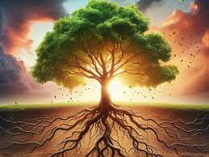

En este proyecto se realizará el tema del proyecto de vida en el que con claridad explicare por que para mi es importante el tener en cuenta todo lo principal oues una cosa te lleva a otraen mi caso que quiero ser un futbolista muy reconocido lo primordial es el entrenamiento para de esta manera llevar una diciplina y de este modo llegara ser uno de los futbolistas mas grandes y reconocidos del mundo.
mi proyecto de vida en lo personal siento que me gustaria seguir estudiando para que de este modo yo pueda ejercer pues algun trabajo que me guste y pues por lo tanto tener mas conosimiento es por eso que en mi proyectos de a corto plazo compo primerra opcion esta tener buenas notas es decir pasar los parciales y eso seria una secuencia de pasos ps teniendo aprobado todos los parciales automaticamente se da por aprobado todos los parciales y pues esto tambien nos lleva a terminar la preparatoria con buenas notas y sin ninguna dificultad ya que si ponemos atencion todo es mas facil es por eso que no es muy recomendabele faltar a clases ya que te afecta en tus notas y en tus conocimientos ya que ps te quedas demaciado atras pues como ya mencionamos un bunto te lleva a otro
Un proyecto de vida es el objetivo principal ya que de este modo podemos ver nuestras metas de largo y a corto plazo son bastantes importantes pues esto nos deja en claro todo lo que tenemos y lo que al final de cuentas como humando no tienes que hacer pues esto es algo que todos debemos de llevar en practica pues es lo mas importante para nuestro futuro aun que para muchos otros pensar en el futuro sea frustrante .
· Tu objetivo principal.
· Acciones para lograr el objetivo
· Plazo de consecución
· Desafíos que encontrarás por el camino.
· Focaliza la energía la que quiere alcanzar.
· Alinea las decisiones.
· Pasar a la acción
La Teoria del color
Teoria de colorEstrategias y Tecnicas de Estudio
Estrategias y Tecnicas de Estudio